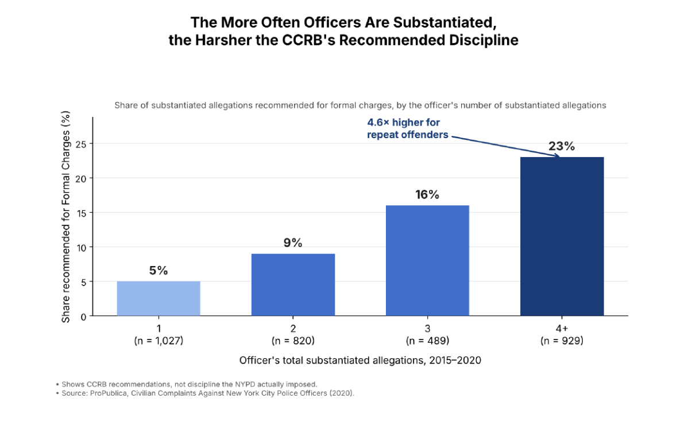
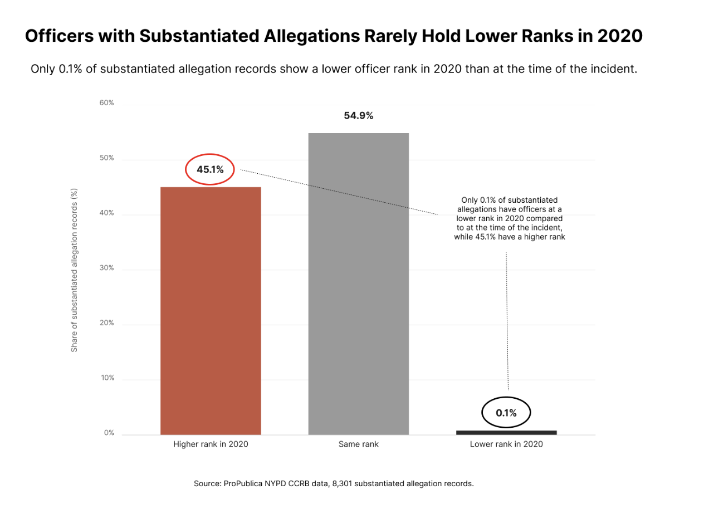

Proposition: The NYPD Civilian Review System Holds Officers Accountable for their Actions.
FOR the Proposition

Supporting Visualization 2 design decisions:
-
Filtering to substantiated allegations from 2015–2020
- Score: -1
- Only substantiated cases receive discipline recommendations, so that filter is necessary. Dropping earlier years with different recommendation patterns, though, makes the escalation look like a stable feature of the system. Each bar is still accurate and the range is stated, so this is selective framing rather than contorting the data, but we chose the window partly because it helped our point.
-
Binning allegations by the officer’s total substantiated allegations (1, 2, 3, 4+)
- Score: -1
-
The count covers the whole 2015–2020 window rather than an officer’s history before each incident. An officer’s first allegation can therefore land in the 4+ bin, and allegations from one complaint all add to the total. It is not -2 because every percentage is correct and each bin’s n is shown. It is not 0 because “repeat offenders” implies a timeline the data does not show, and a reader cannot detect this from the chart. That moves it from “I want to prove my point” toward “I will do anything to prove my point.”
- What worked: the bins give a clean, steady climb, and capping at 4+ kept the last bin large (n = 929).
- What didn’t: the chart cannot show the order of events.
Alternatives were counting only the allegations before each incident, which is truly chronological, or counting complaints instead of allegations. Both are more honest but split the data into smaller, noisier bins. We kept total allegations because it made the escalation easiest to see.
-
Measuring only the share recommended for formal charges
- Score: 0.5
-
Formal charges are the most severe recommendation, so they are a fair measure of “harsher” discipline, and the y-axis states exactly what is shown. It is only 0.5, not 2, because we picked the one category that climbs most sharply. The chart leaves out the 77–95% of each bin that received lighter recommendations, so the reader never sees that most allegations against repeat offenders still do not reach formal charges. The data is accurate, but the omission is selective, which keeps the score near neutral.
- What worked: one number per bar is effortless to read.
- What didn’t: it loses the context Supporting Visualization 1 provides.
Alternatives were a stacked bar of all three discipline categories, or the share receiving any discipline. We rejected both because they were busier and weakened the escalation story.
-
Bar chart with a zero baseline and a sequential blue ramp
- Score: 2
-
Bars fit because the x-axis is a count, not time. The axis starts at 0, each bar shows its n, and darker, taller bars repeat the trend (redundancy gain) without distorting it. This is acceptable persuasion by our definition, because it makes the pattern easier to see without changing it.
- What worked: the checkpoint feedback said this chart was clear.
- What didn’t: the color ramp adds no new information, only emphasis.
Alternatives were a line chart, which would imply a continuous trend between whole-number bins, and a dot plot, which was accurate but less striking. We chose bars for being both clear and honest.
-
Title, “4.6× higher” annotation, and footnotes
- Score: -0.5
-
23% vs. 5% is correctly 4.6×, but a ratio sounds more dramatic than an 18-point gap. The title also implies the CCRB responds to an officer’s history when the chart only shows an association. It is only -0.5 because the footnotes disclose that these are recommendations, not imposed discipline, and no number is distorted; the slant is in emphasis only.
- What worked: the 4.6× figure is memorable and anchors the argument.
- What didn’t: the footnotes are small, so readers may remember the title without the caveat.
Alternatives were annotating “+18 percentage points” and a neutral title such as “Formal Charge Recommendations by Number of Substantiated Allegations.” Both were more earnest but less persuasive, so we kept the stronger framing.
AGAINST the Proposition

Opposing visualization design decisions:
-
Only using the substantiated allegations in the dataset
- Score: -1.5
- Initially, the choice was made simply because substantiated claims were what we wanted to focus on, so the intent was not malicious, affording a 0.5 leeway in deceptiveness. Looking at just these claims, we convince the reader that very few substantiated allegation records are associated with a lower rank in 2020 than at the time of the incident, leading the viewer to the conclusion that the review system is dysfunctional. However, if we create similar graphs for unsubstantiated and exonerated claims, a higher share of rank advancement appears, meaning that substantiated allegations have a lower likelihood of advancement. This potentially supports the supporting argument of the review system’s effectiveness. Therefore, excluding these then became an intentional deception, but since it so effectively communicates the point we’re trying to make (that the review system is ineffective) and is subtle (since outside of data scientists it’s hard to realize that comparative success is what matters, not the percentages in a vacuum), we decided to keep it.
-
Including each case separately instead of grouping by officer
- Score: 1
- We decided to track each incident separately rather than grouping incidents by officers. This raised the higher-rank share from 43.2% to 45.1%, which is a marginal difference but gives officers with multiple allegations more weight and reinforces our argument more. However, this is just a small choice in how to group the data, and so we felt it was earnest because it does not drastically change the reported numbers. The point of earnestness deducted comes from how we framed the results afterward, as our title focuses on officers being promoted even though our graph is on an allegations level. We considered grouping by unique officers, but decided to stick with the allegation-level since each allegation is a unique observation that should have its appropriate weight when conveying our message to the audience rather than being aggregated by the officer.
-
Choosing a bar mark
- Score: 1
- A bar chart was the simplest way to compare the aggregate percentages we had found. Having the bars next to each other makes it clear for viewers to tell the difference between the bars, and thus tell that there is a large share of substantiated records corresponding to officers with higher ranks in 2020, so it worked well in that sense, but it took away some of the focus on how big the 45.1% stat was in a vacuum, which was also something we wanted viewers to take away from the graph. We also explored a stacked bar, having the percentages all in one bar, but it didn’t show the size of the first bar as well since it was hard to compare the sizes of the bars when they weren’t on a shared baseline, and the officers who were demoted were practically not represented. Since the bar chart doesn’t hide anything maliciously, we feel it’s a mostly earnest decision. However, one slightly deceptive choice we made was exaggerating the visual height of the 0.1% bar to maintain its visibility. While the displayed percentage of 0.1% is accurate, the bar is not proportional to the y-axis scale, so this is a slight visual distortion and slightly deceptive visually, which is why we deducted one point.
-
Choosing colors (red for the promoted bar, gray for the same rank bar)
- Score: 2
- We wanted the viewers to focus on the large percentage of officers that had been promoted between their incident and 2020, so we colored it in red, a striking color to raise alarm and attention from viewers’ subconscious. We contrasted this with a neutral gray on the “same rank” bar since this bar wasn’t the focus of our plot, emphasizing the red when sat next to a dull, uninteresting color. Because the goal is to draw the viewer’s eye to the part of the graph we want to emphasize without hiding anything, settling on this color scheme feels earnest. We considered other color schemes, like having green for the promotion(since a promotion is positive and green is also associated with positivity and growth, as compared to red, which is more often associated with loss), but this didn’t feel like it emphasized the importance of such a large promotion percentage. Plus, the idea of our graph was that these promotions are a negative occurrence, reflective of the ineffectiveness of the review system, and thus red, a negative color, made more sense to use.
Final Reflection
Our group’s main proposition is to determine whether the NYPD civilian review system holds its officers accountable by measuring disciplinary action, such as rank demotion and the severity of recommended discipline. While creating our visualizations, we found the data relatively straightforward. To make the data usable for answering our questions, we needed to transform the data by grouping allegations according to the officer’s total substantiated allegations and producing differences in ranking between the time of the incident and 2020. Our supporting visualization displays the recommended disciplinary action for substantiated allegations, illustrating how multiple substantiated allegations against an officer are associated with a higher proportion of formal charges (the severest punishment recommendation category), a straightforward visualization that supports the argument that the system holds repeated offenders accountable. Drawing that chart was easy, but defining its bins was the hardest part: we had to decide whether to count allegations or complaints, whether to count an officer’s history before each incident or across the whole 2015–2020 window, and where to cap the last bin, and each choice changed how steep the climb from 5% to 23% looked. It was initially surprising that very few officers had a 2020 rank lower than their incident-time rank. However, the dataset’s limitations significantly shape this interpretation, as it includes only officers still on the force in June 2020 and excludes those who departed before that date. As a result, promotions are confounded with time, as officers with a longer time gap between their allegation and 2020 have more opportunities to advance their careers. Despite these limitations, the scarcity of lower-ranking officers in 2020 remains a compelling statistic for our deceptive visualization, showing how selective framing can shape interpretation of a broader claim.
For our supporting visualization, we chose a bar chart instead of a line chart to clearly display differences in formal charge recommendations for officers with varying levels of substantiated allegations, as the relationship is defined by the number of allegations, not by time. The double encoding of increasing bar height (mark length) and progressively darker colors (color saturation) for the number of allegations reinforces the already climbing relationship with redundancy gain. Its framing does more persuasive work than its encoding: the title presents the trend as escalation, and the annotation reports 23% vs. 5% as “4.6× higher for repeat offenders,” a ratio that sounds more dramatic than an 18-point gap, even though the binning counts allegations across the whole window rather than in chronological order. For our opposing visualization, we condensed job changes into three categories: promoted, unchanged, and demoted. To further enhance the appearance and impact of the opposing take, we chose individual allegations rather than unique officers to show a larger difference in the graph. This lets the audience easily perceive that officers with substantiated allegations have very little to no demotion in rank, using a strong red on the bar and circling key details instead of neutral grays to highlight our focus while obscuring details such as elapsed time, increasing preattentive processing. What surprised us most is that we can create two visualizations from the same dataset that support opposite conclusions by simply changing the accountability measure and its associated design choices, and that the most consequential decision in our supporting chart, a single derived field, never appears on the chart itself.
We define ethical analysis and visualization as following the scientific method and creating visualizations in good faith, with minimal manipulation or exclusion of crucial information. No universal, quantifiable boundaries distinguish acceptable persuasive choices from misleading ones, since each dataset and story varies. Our group defines acceptable persuasion as using graph elements, colors, shapes, and selective framing to convey the message while staying accurate to the data. We consider misleading visualizations those that convey a message the data would have to be extremely contorted to support. By that standard, our supporting visualization is persuasive rather than misleading: every bar is an accurate percentage of its labeled group, the axis starts at zero, and the footnotes state that these are CCRB recommendations rather than discipline the NYPD actually imposed, so the data never has to be contorted to support the title; its “repeat offenders” label and 4.6× ratio are true but chosen to make the system look more responsive than a neutral reading would. The creator’s intent plays a significant role in determining a visualization’s credibility. Furthermore, even if one’s intent is clear when making a visualization, the design itself should encode that intent and leave it to the audience to engage with and evaluate it critically without confusion. There is a distinction between “I want to prove my point” and “I will do anything to prove my point.”